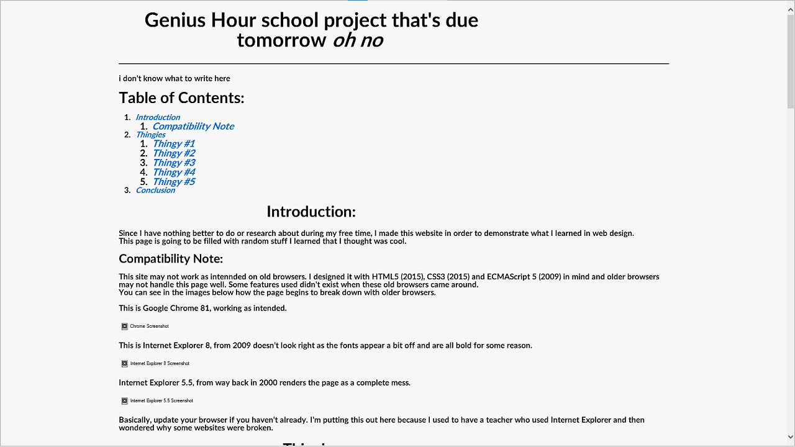

i don't even know what to write here
Since I have nothing better to do or research about during my free time, I made this website in order to demonstrate what I learned in web design.
This page is going to be filled with random stuff I learned that I thought was cool.
This site may not work as intennded on old browsers. I designed it with HTML5 (2015), CSS3 (2015) and ECMAScript 5 (2009) in mind and older browsers may not handle this page well. Some features used didn't exist when these old browsers came around.
You can see in the images below how the page begins to break down with older browsers.
This is Google Chrome 81, working as intended.

This is Internet Explorer 8, from 2009 doesn't look right as the fonts appear a bit off and are all bold for some reason.
Internet Explorer 5.5, from way back in 2000 renders the page as a complete mess.
Basically, update your browser if you haven't already.
Random thingies I can show off
HTML5 adds a cool feature known as the audio tag, an HTML element that lets you play audio within a website.
You can make an audio element have controls (handled by browser) or control it through the magic of JavaScript! (Such as this copy of the DOOM 3 soundtrack)
Below is an audio element:
Thanks to the magic of JavaScript, I made some buttons to play music!
The code behind these buttons looks a little something like this:
(HTML)
<button onclick="coolmusic.play();">Play!</button>
<button onclick="coolmusic.pause();">Pause!</button>
<button onclick="coolmusic.currentTime = 43; coolmusic.play>Go to the cool part!</button>
<button onclick="coolmusic.pause(); coolmusic.currentTime = 0;">Requeue to beginning!</button>These are button tags, which have the "onclick" property that executes our JavaScript functions when clicked.
(JavaScript)
var coolmusic = document.getElementById("coolmusic");This line of JavaScript simply finds the music within the document and declares it as a variable under the name "coolmusic".
The HTML above then executes the function using the "coolmusic" name followed by a function (play, which plays, pause, which pauses and currentTime, a variable that stores the current location in the song which can be set to another value).
Taking advantage of this, you could replace the browser-defult ugly audio player with one you make yourself, although I don't have the time to do this.